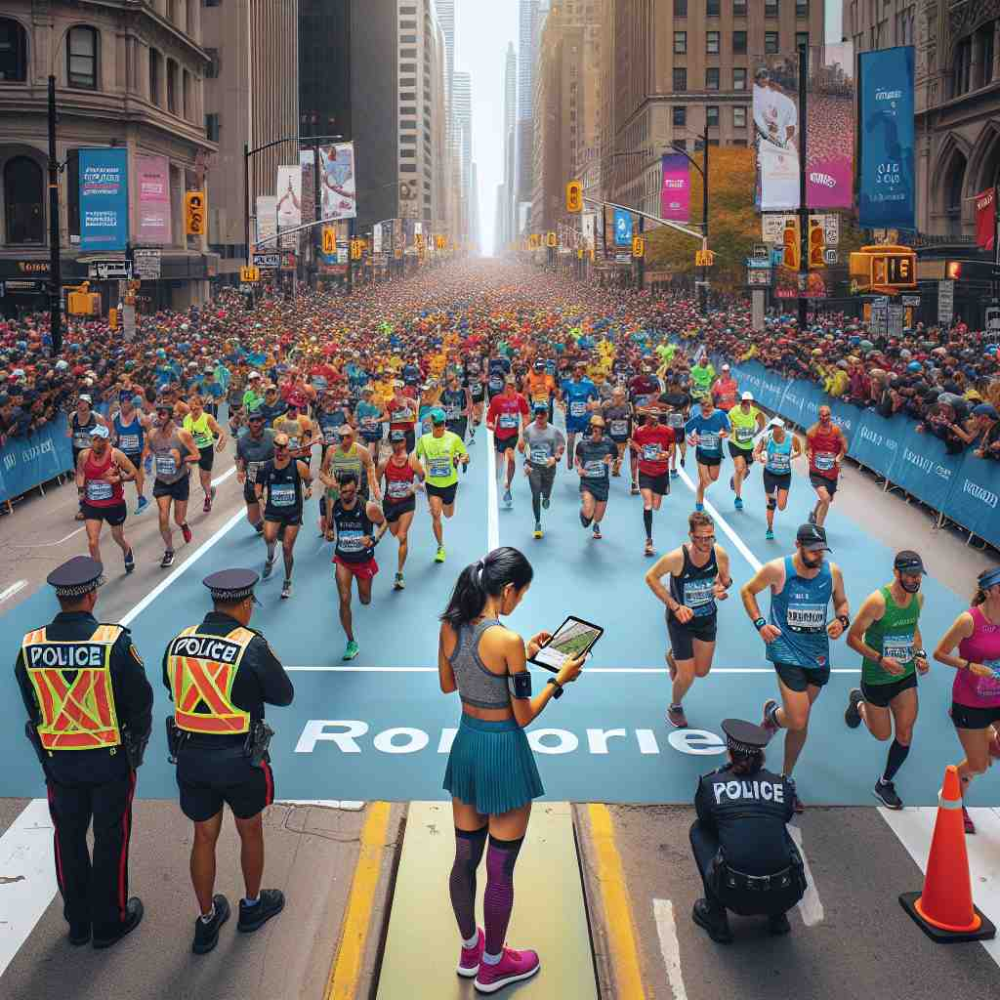

💬 The captain adjusts the sails to follow the course of the ship.

💬 The boats are traveling along the course of the river.

💬 The runners are following the course of the race in the marathon.
🔈 [kɔːs]
🗝️ n. a direction or route along which something moves
🖼️ 在大海上，一艘轮船正在航行。船长站在甲板上，凝视着前方的地平线，手中握着指南针，确保船只沿着正确的'course'航行。海风拍打着船帆，船缓缓地在水面上前行，展示了'course'作为航向或路线的含义。
🔍 想象'course'是一条路线或轨道。无论是实际的路径、学习过程、用餐顺序、事物发展还是运动场地，都可以看作是沿着这条路线前进。这个核心概念贯穿了'course'的各种用法，有助于更好地理解和记忆它的多重含义。
💬 The captain adjusts the sails to follow the course of the ship.
💬 The boats are traveling along the course of the river.
💬 The runners are following the course of the race in the marathon.
🌳 由词根 "cours"（指“跑，流动”）和名词构成，用来表示“课程，过程，方向等”。
💡 记忆 "course" 时，可以联想为生活中的一个 "过程" 或 "课程"，就像水流动的路径，强调其多种用途：流动、过程、方向等。
🗝️ n. a series of lessons or lectures on a particular subject
🖼️ 在一间明亮的大学教室里，学生们正在听一位教授讲授心理学'course'。白板上写满了笔记，教授用充满热情的语气解释着复杂的理论，学生们认真地在笔记本上记录，反映了'course'作为系列课程的含义。
💬 She's taking a course in French literature.
❓ 学习或讲座如同沿着一条路线前进
🗝️ n. a part of a meal served at one time
🖼️ 在一家优雅的餐厅里，服务员微笑着将香喷喷的主菜端上餐桌。这是客人们期待已久的下一'dish course'，他们享受着此刻的美味体验，这个场景完美地展示了'course'作为一道美食的含义。
💬 The main course was roast beef.
❓ 一道菜如同用餐过程中的一个阶段
🗝️ n. the way in which something progresses or develops
🖼️ 在一个热闹的商业会议上，首席执行官正在向团队展示公司未来的战略发展'course'。他展示了一份包含详细计划的幻灯片，描述了公司要如何一步步实现目标，强调了'course'作为发展过程的含义。
💬 The course of history was changed by that event.
❓ 事物发展如同沿着一条路线前进
🗝️ n. a tract of land for playing golf
🖼️ 在一个宽阔而绿意盎然的高尔夫'course'上，球手正专心致志地瞄准下一杆。远处的旗杆轻轻摇曳，阳光下球道显得格外平整，展示了'course'作为高尔夫球场的含义。
💬 They played 18 holes on the golf course.
❓ 高尔夫球场是球员需要沿着特定路线行进的场地
🗝️ v. to move swiftly and smoothly
🖼️ 在一个秋天的清晨，一只鹿在森林中迅速穿梭。它轻盈地'course'过落叶铺成的小径，仿佛融入森林的自然节奏，完美诠释了'course'作为一项流畅运动的含义。
💬 Blood courses through our veins.
❓ 沿着某个方向快速移动